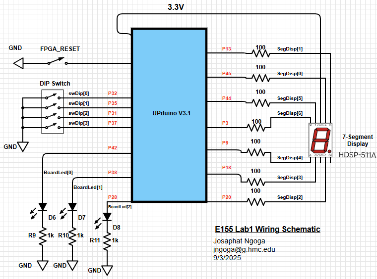

E155 Lab 1: FPGA and MCU Setup and Testing
Introduction
In this lab, an FPGA and MCU were installed on a development board setup and tested to verify proper functionality. The FPGA was later programmed to control a 7-segment display and a couple on-board LEDs based on a series of DIP switches. First, the development board was built by soldering on each individual components following BOM, schematic, and the silkscreen on the provided PCB.
Development Board Setup
The primary purpose of this lab was to assemble the development board to be used for the different labs and projects over the semester. The provided board was an empty PCB to be populated by different electrical components within the categories of Through Hole Technology (THT) as Surface Mount Technology (SMT). The electrical components provided were: resistors, capacitors, voltage regulator, DIP switches, push-button switches, jumpers, and LEDs. At the heart of the board there is the Nucleo-L432KC microcontroller unit (MCU) and the UPduino v3.1 FPGA which is the primary component handling the tasks of this lab.
The soldering process was straightforward except for the SMT components. It was hard to solder the voltage regulators because the underside plate was not sticking to the board fully. Surprisingly it was easy to solder the LEDs and other smaller SMT components probaly because I was just connecting to specific terminals as opposed to the wide plate of the voltage regulators. Due to inventory shortages, I was unable to install D1, the LED responsible to show if the board is powered on. The complete development board is shown below:

Experiment Setup
The main task of the lab was to light up on-board LEDs and a HDSP-511A seven-segment display using one of the DIP switch modules on the development board. This was to be done using SystemVerilog modules uploaded to the FPGA module on the board.
FPGA and MCU Testing
Before setting up for the actual experiment the FPGA and MCU, the brains of the whole board, were tested to ensure they work and can communicate to the respective components on the board they’re internally connected to. Determining if the board was powered on properly required some work without the red on-board VIN LED but I was able to read the input voltages from the regulators and the VIN pins using the tabletop multimeters in the lab space.
Using Lattice Radiant to program and upload the code to the FPGA, an onboard LED (D3) was toggled to blink at about 1HZ. Testing the MCU used a similar approach but Segger Embedded Studio was used to program the MCU where it blinked three on-board LEDs (D2, D3, and D7). These testing procedures worked out as expected indicating that the FPGA and MCU are integrated to the board correcltly.
FPGA Experiment Design
To further test the board we had to drive two LEDs responding to the states of the four-DIP switch module. Based on the provided truth table, the first LED had to react to the first 2 DIP switches in a manner resembling an exclusive OR (XOR) gate. The second LED had to react to the last pair of DIP switches similar to an AND gate. These LEDs responded to their respective switch pair regardless of the other pair. The third LED to be controlled had to blink at about 2.4 Hz. This was done by leveraging the HSOSC module of the iCE40 Technology Library in Lattice Radiant. This allowed access to the on-board high speed oscillator providing 48MHz. Each cycle of third LED would last around 0.417 seconds meaning a full cycle requires around \(\approx2*10^7\) ticks every second. With a 50% duty cycle it would take \(10^7\) ticks for the half cycle. This logic was used to design a flip flop that switched the state of the LED every \(10^7\) ticks (everytime the logic counter hit 10,000,000).
The second task was to setup a 7-segment display to display a single hexadecimal digit specified the binary state of the 4 DIP switches (shown as swDIP [3:0] in the code). The segments of the display share a common anode that is to be powered by 3.3V from the FPGA. Therefore to turn on the segments, a logic 0 was applied to the segment cathode line. Since we have a 4-bit switch state, it meant we could display all hex digits from 0x0 to 0xF. The modules to control these elements were written in SystemVerilog to run on the FPGA and to ensure proper communication and signal control, they all followed the hierachy in the block diagram below:
After running the simulation, the full setup was installed on a breadboard to visualize the actions of the on-board LEDs and to control the 7-segment display using the following schematic:

As seen from the schematic, the on-board LEDs are hooked up to \(1k\Omega\) resistors and the 7-segment display to \(100\Omega\) resistors to ensure reasonable (safe) current draw from the FPGA.
The 7-segment display LEDs have a typical forward voltage drop of \(\approx2.00V\). The FPGA limits the total current draw to \(200mA\). With a target current between \(2-20mA\) to drive the LEDs, and the input voltage of \(3.3V\) from the FPGA, I calculated the desired resistor values using \(R = \frac{V_{\text{in}} - V_{f}}{I_{des}}\) obtaining that R should be between \(65-650\Omega\). I opted for the modest \(100\Omega\) which draws \(13mA\) and is well within a range where the total current draw of the full display won’t overwhelm the FPGA.
Results and Discussion
Testbench simulation
Setting up the simulation was challenging due to different hurdles presented by Lattice Radiant, for example the tendency to sysnthesize the .tv file even though it’s not Verilog. The testbench also required a “timeprecision specification” which was fixed by adding the code `timescale 1ns/1ns to the top of the testbench code. Each module was simulated individually and running the simulation yielded the following waves:

As shown from the simulation waves in Figures 4 and 5, the setup responded as expected which is a good sign.
Hardware Testing
The blinking LED could not be visualized using an automated testbench, Figure 6 below shows the oscilloscope trace indicating the LED is blinking at the desired \(2.4Hz\) and with a duty cycle of \(50\%\).
Using Radiant programmer, the code was uploaded to the FPGA to test the response of the on-board LEDs and the 7-segment display. The hardware responded properly as shown in the example figures below:
Conclusion
This lab took around 22 hours to complete mainly because I had to go through a lot of debugging processes to ensure my hardware works and connect to the board. In the end, it turned out to be the issue that I assigned hardware pin constraint to one of the SPI pins (Pin 12) which is used to connect to the FPGA. The lab was amazing overall and I was able to brush up my skills earned in E85.
AI Prototype Summary
I used the new and updated LLM chatGPT 5.0 which is expected to be faster and smarter. After inputing the prompt, I received the following SystemVerilog code.
// iCE40UP5K: Blink an LED at 2 Hz using the internal high-speed oscillator
// Tooling: Yosys/nextpnr-ice40 or Radiant/Trellis
`default_nettype none
module top (
output logic LED // constrain this to your chosen package pin in the .pcf/.lpf
);
// ------------------------------------------------------------------------
// Internal high-speed oscillator (nominal 48 MHz with selectable dividers)
// CLKHF_DIV options (as strings):
// "0b00" = 48 MHz, "0b01" = 24 MHz, "0b10" = 12 MHz, "0b11" = 6 MHz
// We'll use 12 MHz for a modest counter size.
// ------------------------------------------------------------------------
logic clk_hf;
SB_HFOSC #(
.CLKHF_DIV("0b10") // 12 MHz
) u_hfosc (
.CLKHF (clk_hf),
.CLKHFEN (1'b1), // enable clock
.CLKHFPU (1'b1) // power up
);
// ------------------------------------------------------------------------
// Blink at 2 Hz: toggle every half period (0.25 s)
// For a 12 MHz clock: cycles per toggle = 12_000_000 / (2*2) = 3_000_000
// ------------------------------------------------------------------------
localparam int unsigned CLOCK_HZ = 12_000_000;
localparam int unsigned BLINK_HZ = 2;
localparam int unsigned TOGGLE_CYCLES = CLOCK_HZ / (2 * BLINK_HZ);
// Counter width computed from the terminal count
localparam int unsigned CNT_W = (TOGGLE_CYCLES > 1) ? $clog2(TOGGLE_CYCLES) : 1;
logic [CNT_W-1:0] cnt = '0;
logic led_q = 1'b0;
always_ff @(posedge clk_hf) begin
if (cnt == TOGGLE_CYCLES-1) begin
cnt <= '0;
led_q <= ~led_q; // toggle LED every 0.25 s -> 2 Hz blink
end else begin
cnt <= cnt + 1'b1;
end
end
assign LED = led_q;
endmodule
`default_nettype wireThis code is well designed but it failed to synthesize because of the use of SB_HFOSC module. Radiant insisted it couldn’t find the module and the LLM kept on insisting I find it in my install files which I couldn’t. To fix it, I had to specifically tell it to use HSOSC hf_osc where the module synthesized properly.
// Blink LED at 2 Hz using internal HSOSC (Radiant/LSE-friendly)
`default_nettype none
module top (
output logic LED
);
// ------------------------------------------------------------------------
// HSOSC primitive (some Radiant/LSE setups expose this name).
// CLKHF_DIV: "0b00"=48 MHz, "0b01"=24 MHz, "0b10"=12 MHz, "0b11"=6 MHz
// ------------------------------------------------------------------------
localparam string DIV_SEL = "0b10"; // 12 MHz
logic clk_hf;
HSOSC hf_osc (
.CLKHF (clk_hf),
.CLKHFEN (1'b1),
.CLKHFPU (1'b1)
);
defparam hf_osc.CLKHF_DIV = DIV_SEL;
// ------------------------------------------------------------------------
// 2 Hz blink (toggle every 0.25 s)
// ------------------------------------------------------------------------
localparam int unsigned CLOCK_HZ = (DIV_SEL=="0b00") ? 48_000_000 :
(DIV_SEL=="0b01") ? 24_000_000 :
(DIV_SEL=="0b10") ? 12_000_000 : 6_000_000;
localparam int unsigned BLINK_HZ = 2;
localparam int unsigned TOGGLE_CYCLES = CLOCK_HZ / (2 * BLINK_HZ);
localparam int unsigned CNT_W = (TOGGLE_CYCLES > 1) ? $clog2(TOGGLE_CYCLES) : 1;
logic [CNT_W-1:0] cnt = '0;
logic led_q = 1'b0;
always_ff @(posedge clk_hf) begin
if (cnt == TOGGLE_CYCLES-1) begin
cnt <= '0;
led_q <= ~led_q;
end else begin
cnt <= cnt + 1'b1;
end
end
assign LED = led_q;
endmodule
`default_nettype wireThe LLM used some new declarations that I didn’t understand so I had to ask it to explain more about them. For example the use of localparam ensures that the set variables stay within the module and can’t be altered by top level modules or other sub modules. Kinda like private in java. This also allowed the LLM to use numbers instead of writing every math in binary logic. The addition of `default_nettype wire ensures that SystemVerilog synthesis errors out when there is an undeclared identifier instead of declaring it as a wire which complicates the debugging process in case of an error. Next time I use an LLM I’d make sure to have a more specific prompt that specifies some things to use and other specifics to keep in mind.